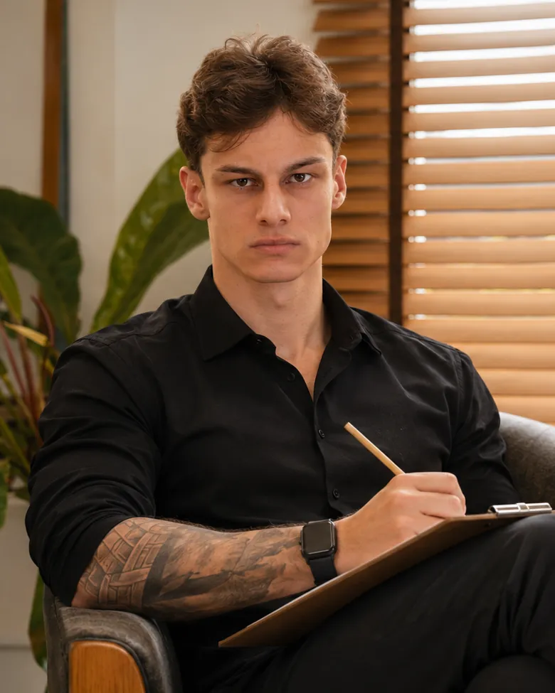

Aula gratuita e ao vivo | 07 de dezembro
Por que você não consegue parar, mesmo sabendo que aquilo te faz mal?
Descubra o que a ciência revela sobre os mecanismos por trás dos vícios e aprenda 5 passos práticos para começar a mudar comportamentos que você não consegue controlar.
- 07 de dezembrosegunda-feira
- 19h30horário de Brasília
- Online e ao vivo100% gratuito
Entre no grupo gratuito de WhatsApp para receber o link de acesso e os avisos da aula.

Entenda por que é tão difícil abandonar um vício e o que você pode fazer para começar a mudar.
Você já prometeu que iria parar de fazer alguma coisa, mas acabou repetindo o mesmo comportamento?
Na aula, o psicólogo João Chesca vai mostrar, com base em estudos científicos, por que determinados comportamentos se tornam tão difíceis de controlar e como você pode começar a mudar esses padrões.
-
Por que você continua fazendo aquilo que sabe que te prejudica
Entenda como seu cérebro aprende a repetir comportamentos e por que a força de vontade, sozinha, muitas vezes não é suficiente para mudar.
-
Como os vícios alteram seu sistema de recompensa
Descubra o papel da dopamina, por que certos comportamentos se tornam cada vez mais difíceis de abandonar e como é possível desejar algo que já nem proporciona tanto prazer.
-
O que desperta sua vontade e faz você repetir os mesmos erros
Aprenda como ambientes, emoções, horários e situações podem funcionar como gatilhos para comportamentos que você gostaria de abandonar.
-
Os 5 passos práticos para começar a vencer seus vícios
Conheça um método baseado em princípios da psicologia científica para identificar seus gatilhos, modificar seu ambiente, lidar com a vontade e começar a construir novos padrões de comportamento.
Participe gratuitamente da aula ao vivo.
João Chesca
Psicólogo | Especialista em Prática Baseada em Evidências
João Chesca é psicólogo e acredita que, para transformar um comportamento, primeiro precisamos compreender por que ele acontece.
Com mais de 100 mil seguidores nas redes sociais, João traduz estudos científicos sobre o comportamento humano em explicações acessíveis, ajudando pessoas a compreenderem melhor seus pensamentos, emoções, hábitos e decisões.
Seu trabalho é fundamentado na Psicologia Baseada em Evidências, conectando pesquisas científicas com situações reais do cotidiano.
Nesta aula gratuita, João vai explicar os mecanismos que ajudam a manter comportamentos aditivos e apresentar cinco passos práticos para você começar a mudar sua relação com eles.
Aula gratuita com João Chesca
Entenda seus vícios e aprenda por onde começar a mudar.
No dia 07 de dezembro, às 19h30, você tem um encontro ao vivo com João Chesca para entender, com base na ciência, por que é tão difícil parar e aprender 5 passos práticos para começar a retomar o controle dos seus comportamentos.
- Segunda, 07/12/202607 de dezembro
- 19h30horário de Brasília
- Online100% gratuito
Entre no grupo gratuito de WhatsApp e receba todas as informações e o link da transmissão.
Conteúdo educativo. A aula não substitui avaliação ou tratamento profissional para dependências.